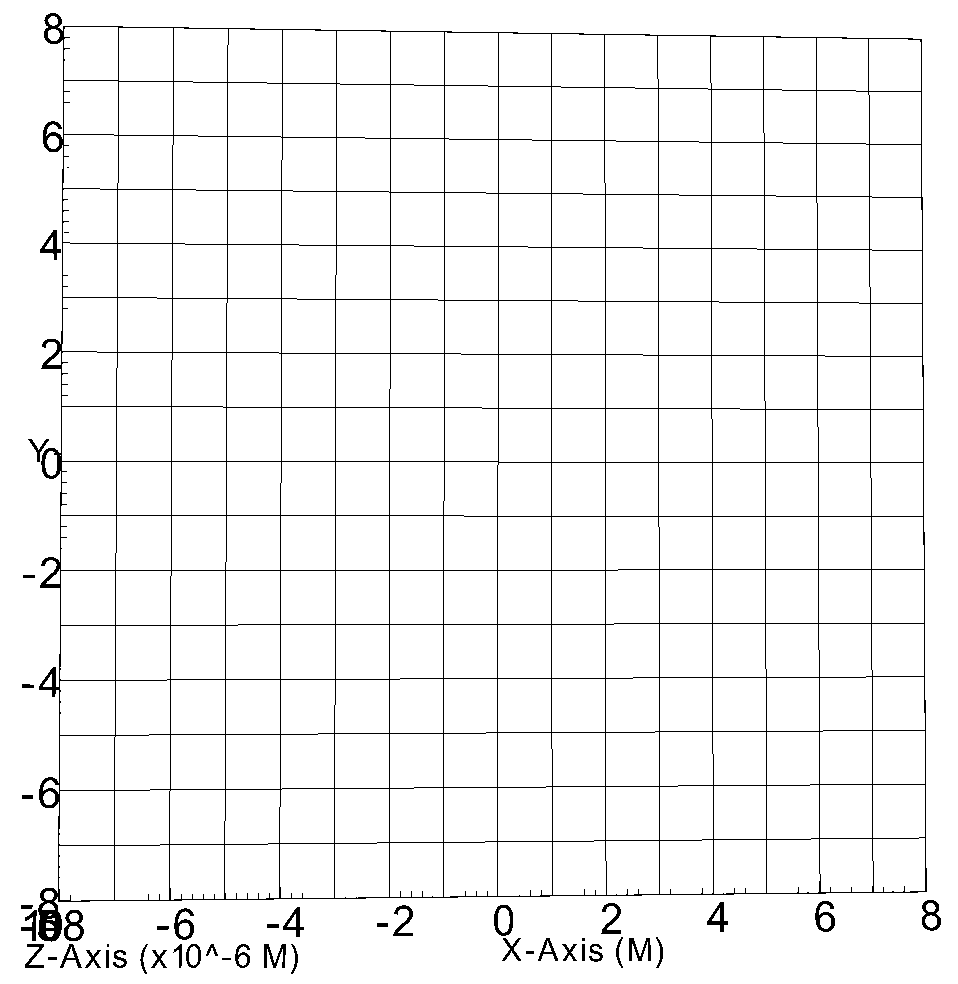
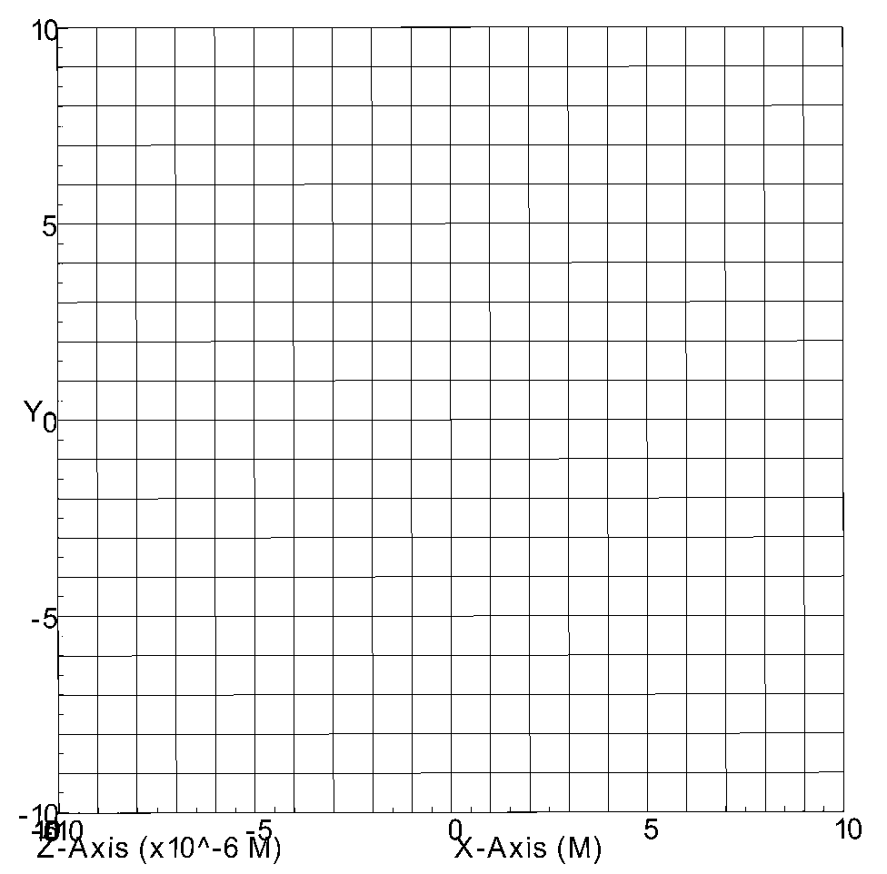

CactusBase¶
Provides infrastructure thorns for boundary conditions, setting up the coordinates, Input and Output, symmetries and time.
Coordinate¶
The CoordBase thorn provides a method of registering coordinate systems and their properties.
CoordBase provides a way for specifying the extent of the simulation domain that is independent of the actual coordinate and symmetry thorns. This is necessary because the size of the physical domain is not necessarily the same as the size of the computational grid, which is usually enlarged by symmetry zones and/or boundary zones.
Note
The black hole “source” region has a length scale of \(G M / c^{2}\), where G is Newton’s constant, M is the total mass of the two black holes, and c is the speed of light. The gravitational waves produced by the source have a length scale up to \(\sim 100 G M / c^{2}\). The source region requires grid zones of size \(\lesssim 0.01 G M / c^{2}\) to accurately capture the details of the black holes’ interaction, while the extent of the grid needs to be several hundred \(G M / c^{2}\) to accurately capture the details of the gravitational wave signal.
Parameter¶
Specifying the extent of the physical domain and the location of the boundary points.
>>> CoordBase::xmin = -10.0 >>> CoordBase::ymin = -10.0 >>> CoordBase::zmin = -10.0 >>> CoordBase::xmax = +10.0 >>> CoordBase::ymax = +10.0 >>> CoordBase::zmax = +10.0 >>> CoordBase::dx = 1 >>> CoordBase::dy = 1 >>> CoordBase::dz = 1

>>> CoordBase::xmin = -10.0 >>> CoordBase::ymin = -10.0 >>> CoordBase::zmin = -10.0 >>> CoordBase::xmax = +10.0 >>> CoordBase::ymax = +10.0 >>> CoordBase::zmax = +10.0 >>> CoordBase::dx = 1 >>> CoordBase::dy = 1 >>> CoordBase::dz = 1 >>> CoordBase::boundary_shiftout_x_lower = 1 >>> CoordBase::boundary_shiftout_y_lower = 1 >>> CoordBase::boundary_shiftout_z_lower = 1 >>> driver::ghost_size = 3
>>> CoordBase::xmin = -10.0 >>> CoordBase::ymin = -10.0 >>> CoordBase::zmin = -10.0 >>> CoordBase::xmax = +10.0 >>> CoordBase::ymax = +10.0 >>> CoordBase::zmax = +10.0 >>> CoordBase::dx = 1 >>> CoordBase::dy = 1 >>> CoordBase::dz = 1 >>> CoordBase::boundary_size_x_lower = 3 >>> CoordBase::boundary_size_y_lower = 3 >>> CoordBase::boundary_size_z_lower = 3 >>> CoordBase::boundary_size_x_upper = 3 >>> CoordBase::boundary_size_y_upper = 3 >>> CoordBase::boundary_size_z_upper = 3 >>> CoordBase::boundary_shiftout_x_lower = 1 >>> CoordBase::boundary_shiftout_y_lower = 1 >>> CoordBase::boundary_shiftout_z_lower = 1 >>> driver::ghost_size = 3

CartGrid3D¶
CartGrid3D allows you to set up coordinates on a 3D Cartesian grid in a flexible manner.
Parameter¶
Get specification from CoordBase
>>> CartGrid3D::type = "coordbase"
Get specification from MultiPatch
>>> CartGrid3D::type = "multipatch"
Boundary¶
Provides a generic interface to boundary conditions, and provides a set of standard boundary conditions for one, two, and three dimensional grid variables.
Warning¶
The aliased function ‘SymmetryTableHandleForGrid’ (required by thorn ‘Boundary’) has not been provided by any active thorn !
>>> ActiveThorns = "SymBase"
IOUtil¶
Thorns providing IO methods typically have string parameters which list the variables which should be output, how frequently (i.e. how many iterations between output), and where the output should go.
Parameter¶
The name of the directory to be used for output.
>>> IO::out_dir = $parfile
How often, in terms of iterations, each of the Cactus I/O methods will write output.
>>> IO::out_every = 2 ------------------------------ it | | *::coarse_dx | | t | scalar value | ------------------------------ 0 | 0.000 | 0.25000000 | 2 | 2.000 | 0.25000000 | 4 | 4.000 | 0.25000000 | 6 | 6.000 | 0.25000000 | 8 | 8.000 | 0.25000000 |
writing to file is performed only by processor zero. This processor gathers all the output data from the other processors and then writes to a single file.
>>> IO::out_mode = "onefile"
Every processor writes its own chunk of data into a separate output file.
>>> IO::out_mode = "proc"
Note
For a run on multiple processors, scalar, 1D, and 2D output will always be written from only processor zero (that is, required data from all other processors will be sent to processor zero, which then outputs all the gathered data). For full-dimensional output of grid arrays this may become a quite expensive operation since output by only a single processor will probably result in an I/O bottleneck and delay further computation. For this reason Cactus offers different I/O modes for such output which can be controlled by the IO::out_mode parameter, in combination with IO::out_unchunked and IO::out_proc_every.
Warning¶
No driver thorn activated to provide storage for variables
>>> ActiveThorns = "CarpetSlab" AMR driver provided by Carpet >>> ActiveThorns = "PUGHSlab" Driver provided by PUGH
IOBasic¶
Thorn IOBasic provides I/O methods for outputting scalar values in ASCII format into files and for printing them as runtime information to screen.
This method outputs the information into ASCII files named “<scalar_name>.{asc|xg}” (for CCTK_SCALAR variables) and “<var_name>_<reduction>.{asc|xg}” (for CCTK_GF and CCTK_ARRAY variables where reduction would stand for the type of reduction operations (eg. minimum, maximum, L1, and L2 norm)
This method prints the data as runtime information to stdout. The output occurs as a table with columns containing the current iteration number, the physical time at this iteration, and more columns for scalar/reduction values of each variable to be output.
Reduction Operations¶
The minimum of the values
\[\min :=\min _{i} a_{i}\]The maximum of the values
\[\max :=\max _{i} a_{i}\]The norm1 of the values
\[\frac{\Sigma\left|a_{i}\right|}{count}\]The norm2 of the values
\[\sqrt{\frac{\sum_{i}\left|a_{i}\right|^{2}}{count}}\]
Parameter¶
Print the information of CCTK_SCALAR variables
>>> IOBasic::outInfo_vars = "grid::coarse_dx" ------------------------------- it | | *::coarse_dx | | t | scalar value | ------------------------------- 0 | 0.000 | 0.25000000 |
Print the information of CCTK_GF and CCTK_ARRAY variables with the type of reduction
>>> IOBasic::outInfo_vars = "wavetoy::phi" >>> IOBasic::outInfo_reductions = "minimum maximum" ---------------------------------------------- it | | WAVETOY::phi | | t | minimum | maximum | ---------------------------------------------- 0 | 0.000 | 7.104375e-13 | 0.99142726 | >>> IOBasic::outInfo_vars = "wavetoy::phi{reductions = 'norm2'}" ------------------------------- it | | WAVETOY::phi | | t | norm2 | ------------------------------- 0 | 0.000 | 0.10894195 |
Outputs CCTK_SCALAR variabless into ASCII files
>>> IOBasic::outScalar_vars = "grid::coarse_dx" [~/simulations/example/output-0000/example/coarse_dx.xg] "Parameter file /home4/yuliu/simulations/example/output-0000/example.par "Created Sep 05 2019 05:05:37-0400 "x-label time "y-label GRID::coarse_dx "coarse_dx v time 0.0000000000000 0.2500000000000
Warning¶
WARNING[L1,P0] (IOBasic): Unknown reduction operator ‘minimum’. Maybe you forgot to activate thorn LocalReduce? (Driver provided by Carpet)
>>> ActiveThorns = "CarpetIOBasic CarpetReduce"
IOASCII¶
Thorn IOASCII provides I/O methods for 1D, 2D, and 3D output of grid arrays and grid functions into files in ASCII format.
Parameter¶
Outputs CCTK_GF and CCTK_ARRAY variables into ASCII files
>>> IOASCII::out1D_every = 1 >>> IOASCII::out1D_style = "gnuplot f(x)" >>> IOASCII::out1D_vars = "wavetoy::phi" [~/simulations/example1/output-0000/example1/phi_x_[1][1].asc] #Parameter file /home4/yuliu/simulations/example/output-0000/example.par #Created Sep 07 2019 03:55:52-0400 #x-label x #y-label WAVETOY::phi (y = 0.1500000000000, z = 0.1500000000000), (yi = 1, zi = 1) #Time = 0.0000000000000 -0.1500000000000 0.9914272633971 0.1500000000000 0.9914272633971 0.4500000000000 0.9689242170281 0.7500000000000 0.9254388283880 . . .
Warning¶
The aliased function ‘Hyperslab_GetList’ (required by thorn ‘IOASCII’) has not been provided by any active thorn ! (Driver provided by Carpet)
>>> ActiveThorns = "CarpetIOASCII"
Time¶
Calculates the timestep used for an evolution by either
setting the timestep directly from a parameter value
using a Courant-type condition to set the timestep based on the grid-spacing used.
Parameter¶
The standard timestep condition dt = dtfac*max(delta_space)
>>> grid::dxyz = 0.3 >>> time::dtfac = 0.1 ---------------------------------- it | | WAVETOY::phi | | t | norm2 | ---------------------------------- 0 | 0.000 | 0.10894195 | 1 | 0.030 | 0.10892065 | 2 | 0.060 | 0.10885663 | 3 | 0.090 | 0.10874996 |
Absolute value for timestep
>>> time::timestep_method = "given" >>> time::timestep = 0.1 ---------------------------------- it | | WAVETOY::phi | | t | norm2 | ---------------------------------- 0 | 0.000 | 0.10894195 | 1 | 0.100 | 0.10870525 | 2 | 0.200 | 0.10799700 | 3 | 0.300 | 0.10682694 | >>> time::timestep_method = "given" >>> time::timestep = 0.2 ---------------------------------- it | | WAVETOY::phi | | t | norm2 | ---------------------------------- 0 | 0.000 | 0.10894195 | 1 | 0.200 | 0.10799478 | 2 | 0.400 | 0.10520355 | 3 | 0.600 | 0.10072358 |
SymBase¶
Thorn SymBase provides a mechanism by which symmetry conditions can register routines that handle this mapping when a global interpolator is called.
InitBase¶
Thorn InitBase specifis how initial data are to be set up.
Parameter¶
Procedure for setting up initial data
>>> InitBase::initial_data_setup_method = "init_single_level"
Fortran¶
This thorn provides Fortran interfaces for the flesh functions.